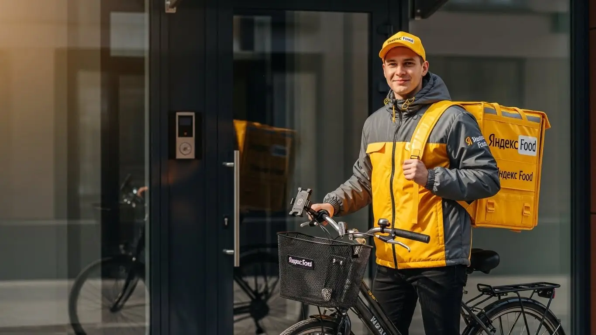

Работа курьером Яндекс Еда в Екатеринбурге 2025-2026: доход и условия

- Работа курьером Яндекс Еды в Екатеринбурге: для кого эта вакансия и что вы получите
- Сколько вы будете зарабатывать курьером в Екатеринбурге: калькулятор дохода и разбор выплат
- Реальный заработок курьера в Екатеринбурге: смены и месячный доход
- График работы и форматы занятости
- Требования к кандидату и документы
- Самозанятость, налоги и юридическая чистота
- Пошаговое оформление и первый выход на линию в Екатеринбурге
- Пешком, на вело или на авто: что выгоднее в Екатеринбурге
- Районы, маршруты и «топовые» зоны заказов в Екатеринбурге
- Безопасность, страховка, штрафы и оплата простоя
- Плюсы и возможные минусы работы курьером в Екатеринбурге
- Реальные истории и отзывы курьеров из Екатеринбурге
- Ответы на главные вопросы о работе курьером Яндекс Еды в Екатеринбурге
- Короткие ответы на главные вопросы
- Итоги и ваш следующий шаг
Все города
Думаешь податься в доставку и ищешь реальную информацию про работу курьером Яндекс Еда в Екатеринбурге? Слышал про заработок до 5000 рублей в день, но боишься, что на деле всё съедят штрафы, налоги и убитая на уральских дорогах подвеска? Я тебя понимаю. Стоять в пробке на Малышева ради заказа на 150 рублей или тащить заказ на 20-й этаж в новостройке на Академе — перспектива так себе, если не знать, как это работает на самом деле.
Приложение покажет тебе красивые цифры, но твой реальный доход в Екатеринбурге зависит от десятка мелочей, о которых молчат в рекламе. Одно дело — возить заказы по тихому Уралмашу, и совсем другое — пытаться припарковаться в центре у «Гринвича» в час пик. Если вы хотите сразу увидеть сводку условий, калькулятор дохода и подать заявку, то вся информация про работу курьером Яндекс Еда в Екатеринбурге собрана на специальной странице. Большинство новичков в Екб в первый же месяц наступают на одни и те же грабли: берут невыгодные заказы, катаются порожняком и не понимают, почему у коллеги заказов больше, а у них — тишина.
Поэтому здесь не будет рекламной воды. Вместо этого мы честно разберём, что выгоднее для работы в Екатеринбурге: свои ноги, велосипед или авто. Посчитаем, сколько РЕАЛЬНО остаётся в кармане после вычета налогов, бензина и обеда. Я покажу, в каких районах — от ВИЗа до ЖБИ — самые высокие коэффициенты, а куда лучше не соваться в час пик. Расскажу, как уральская погода влияет на количество заказов и как не остаться без денег в «мёртвые» часы.
Меня зовут Алексей. Я сам откатал не одну тысячу километров по Екатеринбургу с жёлтой сумкой за спиной, а сейчас у меня свой небольшой таксопарк-партнёр. Я знаю всю эту кухню изнутри — и со стороны курьера, и со стороны партнёра, который подключает новичков. Так что присаживайся поудобнее, сейчас я разложу по полочкам всё, что нужно знать про работу курьером Яндекс Еды и Яндекс Лавки в нашем городе. Начнём с главного — с денег.
Но прежде чем нырять в детали, давай пробежимся по ключевым моментам. Этот короткий гид поможет быстро сориентироваться в статье.
Что ты точно узнаешь из этого разбора
В этой статье ты ТОЧНО узнаешь:
- Сколько реально можно заработать в Екатеринбурге за смену на авто, велосипеде или пешком, и что съедает доход?
- В каких районах Екатеринбурга — от центра до Уралмаша — самые высокие коэффициенты и как не кататься впустую?
- Что выгоднее для Екб: быть пешим курьером в центре, велокурьером в спальниках или автокурьером в пригороде?
- За что на самом деле штрафуют и как не потерять доступ к заказам из-за низкого рейтинга?
- Как устроена работа самозанятым: сколько платить налогов и почему это проще, чем кажется?
- Что такое «оплата простоя» и как она защищает твой заработок, если заказов временно нет?
А если тебе некогда читать всю статью — переходи сразу к заключению, где ты найдёшь короткие ответы на все эти вопросы и указания, в каких разделах искать подробности.
А вот наглядная инфографика, чтобы сразу оценить потенциальный доход.
Работа курьером в Екатеринбурге: ключевые цифры
Работа курьером Яндекс Еды в Екатеринбурге: для кого эта вакансия и что вы получите
Кому подойдёт эта работа в Екатеринбурге
Скажу прямо: эта работа не для всех, но для многих она — настоящая находка. В Екатеринбурге курьерами успешно работают совершенно разные люди. В первую очередь, это студенты наших вузов — УрФУ, Горного, Юридического. Для них это идеальная подработка: можно выходить на пару часов после пар и иметь свои деньги на карманные расходы, не клянча у родителей. График полностью подстраиваешь под себя.
Также это отличный вариант для тех, кто ищет дополнительный доход к основной работе. Закончил смену в офисе или на заводе, переоделся и поехал на 2–3 часа развозить заказы в своём же районе. Никаких начальников над душой, никаких сложных обязанностей.
И конечно, это работа для тех, кто временно остался без основного места или просто хочет быть сам себе хозяином. Если у тебя есть машина, ты можешь работать водителем-курьером на своем авто и зарабатывать вполне серьёзные деньги. Чтобы стать курьером, опыт не требуется — всему научат за полчаса. Главное — желание двигаться и зарабатывать.
Главные преимущества для жителей районов Уралмаш, Академический, Ботаника
Одно из главных удобств в таком большом городе, как Екатеринбург, — возможность работать рядом с домом. Тебе не нужно тратить по часу-полтора на дорогу до «офиса», стоять в пробках на Малышева или толкаться в метро. Живёшь, к примеру, в Академическом — включаешь приложение «Яндекс Про» и начинаешь брать заказы на доставку в своём же районе. Здесь куча новостроек, молодых семей, которые постоянно заказывают готовую еду из Яндекс Еды и продукты из Лавки.
Та же история на Уралмаше или в Ботанике. Это огромные жилые массивы, где всегда есть спрос на доставку. Ты выходишь из подъезда и уже на смене. Это экономит не только время, но и деньги на проезд. Ты лучше знаешь свой район: где срезать путь, где припарковаться, как быстрее дойти до нужного подъезда. Работа в знакомой локации — это и спокойнее, и выгоднее.
Краткое обещание по доходу и условиям
Что по деньгам? Зарплата курьера в Екатеринбурге вполне достойная. При частичной занятости, выходя на 3–4 часа в день, можно спокойно делать 1500–2000 рублей. Если же рассматривать это как основную работу и уделять ей 8–10 часов, то доход курьера на авто может доходить до 4000–5000 рублей за смену. В месяц при полной занятости активные ребята зарабатывают и 80 000, и 100 000 рублей.
Ключевые условия работы, которые привлекают большинство: свободный график, который ты сам составляешь в приложении, и ежедневные выплаты. Не нужно ждать зарплату месяц — отработал смену, и деньги пришли на карту. Оформление обычно как самозанятый, что позволяет получать доход легально. Начать можно без опыта, всё обучение проходит онлайн и занимает меньше часа. По сути, ты можешь заполнить анкету сегодня, а уже завтра выйти на линию и получить свой первый заработок.
Сколько вы будете зарабатывать курьером в Екатеринбурге: калькулятор дохода и разбор выплат
Из чего складывается доход курьера
Твой итоговый заработок — это не просто фиксированная ставка. Он складывается из нескольких частей, и важно понимать, сколько платят за каждый элемент. Во-первых, это базовая оплата за выполнение заказа, которая включает подачу в ресторан или магазин и вручение клиенту. Во-вторых, к ней добавляется доплата за расстояние — чем дальше везти, тем больше денег.
Кроме того, есть повышающие коэффициенты. В часы пик (обед, ужин), в плохую погоду (дождь, снегопад на Урале — обычное дело) или в зонах высокого спроса (центр города, крупные ТРЦ) стоимость заказов умножается на коэффициент. Это позволяет в самые «жаркие» часы зарабатывать в 1.5–2 раза больше. Вся информация о бонусах и коэффициентах видна в приложении Яндекс Про.
Не забывай и про чаевые от клиентов — они полностью твои. Важный момент: сервис платит за простой, если ты приехал в ресторан, а заказ ещё не готов, а также может компенсировать стоимость проезда на общественном транспорте, если маршрут длинный.
Как пользоваться калькулятором дохода
Чтобы прикинуть свой возможный заработок, не нужно гадать на кофейной гуще. На сайте есть специальный калькулятор, и пользоваться им элементарно. Сначала выбираешь свой город — Екатеринбург. Затем указываешь, как планируешь доставлять: как пеший курьер, велокурьер или на своём автомобиле.
Дальше двигаешь ползунки: сколько часов в день и сколько дней в неделю ты готов работать. Например, ставишь 4 часа в день, 5 дней в неделю. Калькулятор тут же покажет примерный диапазон твоего дохода за день и за месяц. Это, конечно, не стопроцентно точная цифра, так как она не учитывает пиковые коэффициенты и чаевые, но даёт очень хорошее представление о том, на что можно рассчитывать. Поиграй с разными вариантами, чтобы понять, какой график для тебя будет самым выгодным.
Прикинь свой доход в Екатеринбурге
Примерный доход в месяц:
Это примерный расчёт на основе средней ставки в 420 ₽/час для Екатеринбурга. Реальный доход зависит от спроса, бонусов и вашего графика.
Примеры расчёта для пешего, вело- и авто-курьера в Екатеринбурге
Давай разберём на конкретных примерах из нашей екатеринбургской практики.
Пеший курьер в центре. Студент выходит на смену после учёбы, с 18:00 до 22:00, и работает в районе Плотинки, улицы Вайнера и ТРЦ «Гринвич». Здесь плотная застройка, много кафе и заказов на короткие расстояния. За 4 часа в вечерний пик он спокойно выполняет 8–10 заказов, а его средний доход за такую смену составит 1600–2200 рублей.
Велокурьер между спальными районами. Парень работает на велосипеде по 6–8 часов в выходной день, катается между Ботаникой и Юго-Западным. Он быстрее пешего, не стоит в пробках и может брать заказы на 3–5 км. За день такой курьер выполняет 15–20 заказов, особенно если погода хорошая. Его заработок за такой день может составить 2800–3500 рублей. Плюс это отличная кардиотренировка.
Водитель-курьер по всему городу. Мужчина работает на своем авто полный день, 8–10 часов. Он берёт заказы по всему Екатеринбургу, включая дальние доставки на Эльмаш, Химмаш или даже в пригород вроде Берёзовского. В плохую погоду, когда пешие и велокурьеры не так активны, у него вал заказов с высоким коэффициентом. За такую смену его доход, за вычетом бензина, может достигать 4000–5500 рублей. В месяц при плотном графике это выливается в очень солидную сумму.
Реальный заработок курьера в Екатеринбурге: смены и месячный доход
Теперь к самому интересному — к реальным цифрам. Вопрос «сколько реально зарабатывает курьер в Яндекс Еде» мне задают постоянно, и честный ответ — «по-разному». Твой доход зависит не от мифической «ставки», а от того, как ты работаешь головой и ногами. Заработок — это конструктор: из чего соберёшь, то и получишь. Но чтобы ты не гадал, я дам конкретные цифры по Екатеринбургу, основанные на опыте моих ребят и моём собственном.
Диапазон дохода для подработки и полной занятости
Если тебе нужна подработка на 2–4 часа в день, чтобы закрыть кредит или накопить на что-то, цифры будут одни. Если ты выходишь на линию как на полноценную работу на 8–10 часов, доход будет совсем другим. Важно понимать: это не оклад, это выработка.
Вот реальные вилки по Екатеринбургу, на которые можно ориентироваться:
- Пеший курьер: Идеально для центра, где всё рядом. За короткую смену в 3–4 часа можно сделать 800–1500 рублей. Если работать так почти каждый день, в месяц выйдет 20–25 тысяч. При полной занятости, активно перемещаясь по зонам с высоким спросом, зарплата пешего курьера может достигать 45–55 тысяч рублей в месяц.
- Велокурьер: Ты быстрее, мобильнее, покрываешь большие расстояния. За 3–4 часа в пиковое время выходит 1200–2000 рублей. Это уже 30–40 тысяч в месяц в режиме подработки. Если кататься полный день, то 60–80 тысяч — вполне достижимая сумма для выносливого велосипедиста.
- Автокурьер (на своем авто): Самый высокий потенциальный доход, но и расходы на бензин и обслуживание машины никто не отменял. За короткую вечернюю смену можно заработать 2500–4000 рублей. При полной занятости доход автокурьера в Екатеринбурге может достигать 90–120 тысяч рублей в месяц «грязными». Из них нужно вычесть 15–25 тысяч на топливо и амортизацию.
Как район, время суток и погода влияют на доход
Запомни три кита высокого заработка: место, время и погода. Если ты научишься их чувствовать, будешь всегда с деньгами. Система платит больше там, где заказов много, а курьеров мало. Это создаёт повышенный коэффициент — множитель, на который умножается стоимость твоего заказа в Яндекс Доставке.
В Екатеринбурге всё предсказуемо. Пиковые часы — это обед (с 12:00 до 14:00) и ужин (с 18:00 до 21:00), а также все выходные и праздничные дни. В это время в центре, в районе ТРЦ «Гринвич» или деловых кварталов на улице Малышева карта спроса в «Яндекс Про» всегда «горит» фиолетовым. А вот в спальных районах вроде Академического или Уралмаша спрос на доставку еды взлетает именно по вечерам и в выходные.
Погода — наш лучший друг. Как только начинается дождь, снегопад или сильный мороз, коэффициенты взлетают до небес. Многие курьеры предпочитают отсидеться дома, а количество заказов резко растёт. Те, кто не боится промокнуть или замёрзнуть, за 2–3 часа непогоды могут сделать дневную норму. Плюс, в плохую погоду клиенты чаще оставляют щедрые чаевые — ценят, что ты добрался до них в такой буран.
Советы по увеличению заработка от опытных курьеров
Чтобы зарабатывать больше, не обязательно работать дольше. Нужно работать умнее. Вот несколько проверенных советов. Во-первых, всегда смотри на карту спроса в приложении перед выходом на линию. Не сиди в «серой» зоне в ожидании чуда, лучше потрать 15 минут и доберись до «фиолетовой», где заказы будут сыпаться один за другим.
Во-вторых, грамотно выбирай слоты. Пятница вечер, суббота и воскресенье — это золотое время. Если можешь, планируй свои выходы именно на эти дни. Даже если ты работаешь на авто, в пятницу вечером по центру Екатеринбурга лучше передвигаться на велосипеде или даже пешком — в пробках потеряешь больше времени и денег, чем заработаешь.
И в-третьих, не брезгуй мультизаказами (когда берёшь сразу несколько доставок из одной точки). Да, придётся немного побегать, но по деньгам это почти всегда выгоднее, чем выполнять заказы по одному. И всегда будь вежлив с клиентом — хорошее отношение напрямую влияет на чаевые, которые могут составлять до 10–15% твоего дневного дохода и приходят на карту вместе с основной выплатой.
Был у меня парень, работал на велосипеде только в своём районе на ВИЗе. Зарабатывал средне, около 2500–3000 за день. Я ему посоветовал попробовать выезжать в центр в дождливые вечера. Он сначала отнекивался, мол, далеко и мокро. Но потом решился. В первый же такой вечер он за 4 часа сделал 3500 рублей, почти свою дневную норму. Теперь он внимательно следит за прогнозом погоды и в «мокрые» дни всегда работает в центре. Его пример доказывает: чтобы зарабатывать больше, нужно не сидеть на месте, а активно использовать карту спроса, выбирать пиковые часы и не бояться плохой погоды.
График работы и форматы занятости
Главный плюс этой работы, который цепляют все — свободный график. И это действительно так. Никто не стоит над душой с табелем учёта рабочего времени. Ты сам решаешь, когда и сколько тебе работать. Но эта свобода, одно из ключевых условий работы, требует самодисциплины. Можно выйти на два часа в день, а можно отработать полную смену. Главное — понимать, как это устроено, чтобы гибкость работала на тебя, а не против.
Подработка после учёбы или основной работы
Совмещать доставку с чем-то ещё — самый популярный сценарий. Это идеальная подработка для студентов и тех, у кого есть основная работа со стабильным графиком. Тебе не нужно подстраиваться под начальника, ты сам выстраиваешь свой рабочий день.
Например, студент УрФУ может после пар, с 18:00 до 22:00, брать велосипед и развозить заказы Яндекс Еды в районе Втузгородка и центра. За 4 часа он спокойно заработает 1500–2000 рублей. А благодаря ежедневным выплатам деньги на карте будут уже на следующий день. Если выходить так 3–4 раза в неделю плюс один полный день в выходной, то к стипендии можно добавить 25–30 тысяч рублей.
Другой пример — офисный сотрудник, который работает с 9 до 18. У него есть машина. В пятницу вечером и в субботу он выходит на линию на 5–6 часов. Он берёт крупные заказы из гипермаркетов вроде «Ленты» или «Мегамарта» в рамках сервиса Яндекс Доставка и развозит их по спальным районам — Ботаника, Юго-Западный. За два таких вечера он может дополнительно заработать 8–10 тысяч рублей, что в месяц даёт ощутимую прибавку к зарплате.
Полная занятость: как выглядит типичный день курьера
Если ты рассматриваешь доставку как основную работу, твой день будет более структурированным. Вот как обычно выглядит смена у опытного автокурьера в Екатеринбурге, который работает на результат. С утра он выходит на линию около 10, начиная со своего района, например, Эльмаша, и выполняет утренние заказы из магазинов и Яндекс Лавки.
К 12:00 курьер смещается ближе к центру, потому что начинается обеденный пик. До 15:00 он крутится в зонах с высоким спросом, выполняя заказы из ресторанов. После обеденного ажиотажа наступает небольшое затишье. Это время можно использовать для короткого перерыва, обеда или выполнения дальних заказов. А с 18:00 и до 22:00 — снова пик, вечерний. В это время он снова работает в густонаселённых районах или в центре, где люди заказывают ужин. За такой день можно накатать 10–12 часов и заработать 5–7 тысяч рублей.
Как планировать слоты и выходы через приложение «Яндекс Про»
Твой главный инструмент — это приложение «Яндекс Про». В нём ты не только видишь заказы, но и планируешь свою работу. Есть два типа выходов на линию: свободный и плановый. Свободный — это когда ты просто нажимаешь кнопку «На линию» и начинаешь работать. Плановый слот — это когда ты заранее бронируешь время и район, в котором будешь работать.
Плановые слоты — это гарантия. Сервис видит, что ты выйдешь, и рассчитывает на тебя, поэтому в таких слотах обычно больше заказов и есть минимальная гарантированная оплата в час, даже если заказов будет мало. Но тут важна пунктуальность. Если ты забронировал слот с 18:00 до 22:00 в районе Автовокзала, ты должен быть в этой зоне и готов к работе ровно в 18:00. Регулярные опоздания или пропуски снижают твой рейтинг, и тебе будет сложнее получать хорошие заказы. Поэтому планируй слоты, на которые точно сможешь выйти.
Новичок в моей команде поначалу жаловался, что заказов мало. Он просто выходил на линию в свободном режиме, когда ему вздумается, и часто попадал в «мёртвые» часы. Я показал ему, как в приложении забронировать плановый слот на вечер пятницы в центре. Он так и сделал. В итоге за 4 часа он заработал больше, чем за предыдущие два дня в свободном режиме. Теперь он всегда планирует свои выходы на 2–3 дня вперёд, ориентируясь на пиковые часы.
Таким образом, свободный график — это не анархия, а инструмент, которым нужно уметь пользоваться. Для подработки достаточно выходить в пиковые часы, а для полной занятости важна стратегия на весь день. Всегда используй «Яндекс Про» для планирования: бронируй выгодные слоты заранее и не опаздывай — это напрямую влияет на твой стабильный доход.
Требования к кандидату и документы
Возраст, гражданство и базовые условия
Теперь о формальностях, но без занудства. Чтобы стать курьером в сервисе Яндекс Еда, тебе должно быть полных 18 лет. Никаких исключений, тут всё строго. По гражданству тоже есть чёткие рамки: нужен паспорт гражданина РФ или одной из стран ЕАЭС — это Беларусь, Казахстан, Армения, Киргизия. Если с этим порядок, считай, полдела сделано.
Что касается физической формы, никто не требует олимпийских рекордов. Но ты должен понимать: работа на ногах. Если ты пеший курьер, то придётся много ходить, в том числе по лестницам. Велокурьеру нужна выносливость, особенно если работать в районах Екатеринбурга с перепадами высот, например, в окрестностях Уктуса. Для водителя-курьера главное — уверенно чувствовать себя за рулём в городском трафике и быть готовым часто выходить из машины для передачи заказов. В общем, нужна базовая выносливость и отсутствие серьёзных проблем со здоровьем, которые мешают движению.
Какие документы нужны для работы курьером
Бюрократии тут минимум, но подготовиться стоит заранее, чтобы не терять время. Вот базовый список документов, который понадобится для оформления:
- Паспорт. Главный документ, подтверждающий твою личность и возраст. Нужен оригинал для регистрации.
- ИНН (Идентификационный номер налогоплательщика). Он нужен для оформления самозанятости и уплаты налогов. Если не помнишь свой номер, его легко найти на сайте ФНС за пару минут.
- Банковская карта. Нужна карта любого российского банка, оформленная на твоё имя. На неё будут приходить ежедневные выплаты. Убедись, что знаешь все реквизиты: номер счёта, БИК и так далее.
- Медицинская книжка. Она требуется не всегда, но может понадобиться для работы с заказами из некоторых ресторанов или дарксторов (склады Яндекс Лавки). Если медкнижки нет, не страшно — начать можно и без неё, а оформить позже, если возникнет необходимость. Сервис подскажет, когда это будет актуально.
Собери всё это заранее. Чем быстрее предоставишь данные, тем быстрее получишь доступ к заказам и начнёшь зарабатывать.
Можно ли работать с 16 лет и какие есть альтернативы
Часто спрашивают, со скольки лет можно устроиться в Яндекс Еду — например, с 16 или 17. Отвечаю прямо: нет, нельзя. Сервис заключает договор только с совершеннолетними, то есть с 18 лет. Это связано с юридической ответственностью, форматом самозанятости и материальными ценностями, которые ты доставляешь. Никакие согласия от родителей здесь не помогут.
Если тебе ещё нет 18, а работать хочется, не стоит отчаиваться. Рассмотри другие варианты подработки, где требования к возрасту ниже. Например, можно раздавать листовки, работать промоутером на мероприятиях или поискать вакансии в небольших местных компаниях, которые берут подростков на летний период. Это тоже опыт и свои первые деньги. А как только исполнится 18, сможешь без проблем стать курьером в Яндекс Еде, уже имея представление о трудовой дисциплине.
Был у меня парень, студент первого курса УрФУ, 18 лет. Пришёл устраиваться, глаза горят, но переживал из-за документов. Думал, что это долгая история. Мы с ним сели, за 15 минут нашли его ИНН на Госуслугах, проверили реквизиты его студенческой карты и заполнили анкету. На следующий день он уже получил фирменный термокороб и вышел на свой первый слот в центре, возле «Гринвича». За 4 часа заработал свои первые 1200 рублей и был абсолютно счастлив. Главное — не бояться, а просто сделать.
В итоге, условия работы и требования к кандидатам в Яндекс Еде простые и понятные: возраст от 18 лет, гражданство РФ или ЕАЭС и стандартный набор документов. Мой совет: перед заполнением анкеты проверь, все ли документы у тебя под рукой, и убедись, что банковская карта активна. Это сэкономит тебе день-два и позволит быстрее выйти на линию.
Самозанятость, налоги и юридическая чистота
Почему курьеры Яндекс Еды работают как самозанятые
Многих пугает слово «самозанятость», но на деле это самый простой и легальный способ сотрудничества с сервисом. Яндекс Еда — это платформа, которая даёт тебе доступ к заказам, а ты выступаешь как независимый исполнитель. Формат самозанятости (официально — налог на профессиональный доход или НПД) был придуман как раз для таких случаев. Он позволяет тебе работать на себя и получать официальный доход.
Главные плюсы такого подхода — прозрачность и простота. Тебе не нужно вести сложную бухгалтерию, сдавать декларации или нанимать бухгалтера. Все твои доходы от выполненных доставок фиксируются, ты платишь небольшой налог (НПД) и работаешь абсолютно легально. Это значит, что твой заработок «белый», его можно подтвердить справкой для банка, например, для получения кредита. Это куда надёжнее, чем работать за «серый» кеш и постоянно переживать о возможных проблемах с налоговой.
Как за 10 минут оформить самозанятость через «Мой налог»
Оформление статуса самозанятого — дело буквально нескольких минут. Всё делается онлайн, никуда ходить не нужно. Вот простая пошаговая схема:
- Скачай приложение «Мой налог». Оно доступно в Google Play и App Store. Это официальное приложение от Федеральной налоговой службы (ФНС).
- Выбери способ регистрации. Самый быстрый — по паспорту РФ.
- Отсканируй паспорт. Просто наведи камеру телефона на главный разворот паспорта, и приложение само распознает все данные.
- Сделай селфи. Приложение попросит тебя сфотографироваться, чтобы подтвердить личность. Улыбаться не обязательно.
- Подтверди регистрацию. Проверь данные и нажми кнопку. Всё, через несколько минут ты официально станешь самозанятым.
Весь процесс интуитивно понятен и занимает не больше 10 минут. Также зарегистрироваться можно через партнёрские сервисы, которые предлагает сам Яндекс при подключении. Они проведут тебя по всем шагам ещё проще.
Сколько и как платить налоги
Теперь о самом главном — о деньгах. Ставка налога для самозанятого курьера, работающего с Яндекс Едой, составляет 6%. Этот налог платится с дохода, который ты получаешь от сервиса за выполненные заказы. Важный момент: ты платишь налог только с заработка, а не со всей суммы, которую заплатил клиент.
Процесс уплаты налога максимально автоматизирован. Через приложение Яндекс Про сервис сам передаёт данные о твоих доходах в налоговую. Тебе нужно лишь раз в месяц зайти в приложение «Мой налог», увидеть сформированную сумму налога и оплатить её до 28-го числа следующего месяца. Например, налог за работу в октябре нужно заплатить до 28 ноября. Кроме того, каждому новому самозанятому государство даёт бонус — 10 000 рублей на уплату налога. Пока этот бонус не исчерпается, твоя ставка будет фактически ниже. Это просто, прозрачно и защищает тебя от любых юридических проблем.
Один из моих водителей, который сейчас работает как водитель-курьер, раньше таксовал «от борта». Вечно боялся проверок, доход был нестабильный и неофициальный. Когда перешёл на работу с Яндексом и оформил самозанятость, сначала ворчал про налоги. А через полгода пришёл довольный: спокойно взял потребительский кредит на ремонт в квартире, потому что смог показать банку официальный доход. Работает в основном по районам Уралмаш и Эльмаш, говорит, что 6% — это небольшая плата за спокойствие и официальный статус.
Подводя итог: самозанятость — это не страшно, а удобно и выгодно. Это твой способ работать легально, иметь официальный доход и не беспокоиться о налогах, выполняя заказы для Яндекс Еды. Мой совет: не ищи «серых» схем, а сразу делай всё по закону. Процесс регистрации элементарный, а низкий налог и автоматизация делают этот формат идеальным для курьера, будь то подработка или основная занятость.
Пошаговое оформление и первый выход на линию в Екатеринбурге
Многие думают, что устроиться курьером — это долго и муторно, с кучей бумажек и собеседований. На деле всё гораздо проще: начать подработку в доставке можно буквально в тот же день, даже если у тебя нет опыта.
Никаких начальников и офисов — ты сам выстраиваешь свой свободный график, а все вопросы решаются онлайн через смартфон. Система специально сделана для людей: минимум бюрократии, максимум дела. Главное — твоё желание работать. Если у тебя есть паспорт, ИНН и смартфон на Android, считай, полдела сделано. Остальные шаги займут от силы пару часов.
Шаг 1–2: анкета и онлайн‑обучение
Первый этап — заполнение короткой анкеты на сайте. Вопросы там базовые: ФИО, дата рождения, гражданство, номер телефона. Никаких эссе на тему «почему я хочу стать курьером». После отправки анкеты система проверит твои данные, это обычно занимает от 15 минут до часа.
Как только данные проверят, тебе откроется доступ к короткому онлайн-обучению. Это не нудные лекции, а несколько видеороликов и тестов прямо в приложении. Там по делу рассказывают об основах: как принимать и доставлять заказы, как общаться с клиентами и поддержкой, что делать в нестандартных ситуациях. В конце — небольшой тест, чтобы убедиться, что ты всё понял. Проходишь его — и ты почти на линии.
Шаг 3: получение сумки и доступа к заказам в Екатеринбурге
После успешного обучения остаётся получить главный рабочий инструмент — фирменный термокороб (или термосумку). Без него система не даст доступ к заказам из ресторанов и магазинов. В Екатеринбурге есть несколько способов его получить: забрать в специальном центре для курьеров, у одного из партнёров сервиса или даже заказать доставку на дом.
Все актуальные адреса и способы получения будут доступны в приложении «Яндекс Про» после того, как ты пройдёшь обучение. Выбираешь самый удобный для себя вариант, забираешь сумку, фотографируешь её в приложении для активации — и твой профиль полностью готов к работе.
Шаг 4: первый слот и первый доход
Как только твой аккаунт активирован, ты можешь выходить на линию. В приложении «Яндекс Про» ты увидишь карту Екатеринбурга с разными зонами и доступными временными интервалами — слотами. Для начала советую выбрать знакомый тебе район, например, тот, где живёшь. Так будет проще ориентироваться и не тратить время на навигатор.
Выбираешь удобный слот, хоть на пару часов вечером, нажимаешь кнопку «На линию» — и всё, ты в работе. Система начнёт предлагать тебе первые заказы. Принял, забрал, отвёз — и деньги сразу поступили на баланс. Многие курьеры видят свой первый доход уже через 3–4 часа после того, как заполнили анкету. Это и есть главный плюс — скорость и простота старта.
Вот недавний пример: студент из УрФУ заполнил анкету утром, пока ехал на пары. На большой перемене прошёл обучение. После учёбы заехал в центр выдачи на Малышева, забрал сумку, и к 18:00 уже вышел на свой первый слот в районе Втузгородка. За три часа он спокойно выполнил 5 заказов и заработал первые 1200 рублей. Никаких сложностей.
В итоге весь процесс от заявки до первого заработка занимает всего несколько часов. Главное — не откладывать и заранее подготовить паспорт и ИНН. Если всё сделать чётко по инструкции, можно выйти на линию в тот же день. Мой совет: не бойся, просто начни, система сама тебя поведёт по шагам.
Пешком, на вело или на авто: что выгоднее в Екатеринбурге
Выбор транспорта — ключевой момент, от которого напрямую зависит твой доход и комфорт работы курьером в Екатеринбурге. У нашего города своя специфика: плотный центр с пробками, широкие проспекты, соединяющие спальные районы, и большие расстояния до пригородов. Поэтому нет одного «правильного» варианта, у каждого формата — свои сильные стороны.
Пеший курьер хорош в центре, велосипедист — король спальников, а водитель забирает самые дорогие заказы на дальние расстояния. Важно трезво оценить свои возможности, район, где планируешь работать, и то, сколько времени готов уделять доставкам. Кто-то совмещает: в хорошую погоду катается на велосипеде, а в снегопад или дождь пересаживается на машину.
Пеший курьер: для центра и плотной застройки в Екатеринбурге
Если ты планируешь работать в центре, то пеший формат — твой выбор. В Ленинском и центральной части Кировского района, особенно в квадрате улиц Малышева – 8 Марта – Ленина – Восточная, машина или даже велосипед часто бывают обузой. Здесь куча пешеходных зон, вроде улицы Вайнера, узкие дворы, постоянные пробки и проблемы с парковкой. Пешком ты пройдёшь там, где любой транспорт застрянет.
Заказов в центре всегда много: тут сосредоточены бизнес-центры, рестораны, кафе и магазины. Расстояния между точками А (ресторан) и Б (клиент) обычно небольшие, 1-2 километра. Пеший курьер может спокойно делать по 3-4 таких коротких заказа в час, не тратясь на бензин или проезд. Это идеальный вариант для подработки на несколько часов в день.
Велокурьер: быстрые доставки между спальными районами
Велосипед даёт скорость и манёвренность там, где пешком уже далеко, а на машине ещё невыгодно. Это лучший транспорт для работы в крупных спальных районах Екатеринбурга, таких как Академический или Уралмаш. Здесь широкие улицы, много велодорожек, а расстояния между заказами уже побольше — 3-5 км. На велосипеде ты преодолеешь их быстрее, чем на автобусе, и не будешь стоять в пробках на выездах из района.
Кроме того, это отличный способ поддерживать себя в форме — по сути, оплачиваемый фитнес. Велокурьеры часто берут заказы «на стыке» районов, например, между Ботаникой и Юго-Западным, где на машине можно потерять много времени на светофорах. Велосипед позволяет срезать путь через парки и дворы, экономя драгоценные минуты и увеличивая число выполненных заказов за смену.
Водитель‑курьер: заказы по всему городу и пригороду Берёзовский, Верхняя Пышма
Автомобиль открывает доступ к самым дорогим и дальним заказам. Это твой главный козырь в плохую погоду — в дождь, снегопад или сильный мороз количество заказов резко растёт, а коэффициенты увеличиваются, потому что пеших и велокурьеров на линии становится меньше. Водитель-курьер может комфортно работать в любых условиях.
На машине выгодно брать заказы между отдалёнными районами (например, с Эльмаша на ВИЗ) или доставлять в пригороды — Берёзовский, Верхнюю Пышму, Среднеуральск. Туда общественный транспорт ходит нечасто, а пешком не дойдёшь. Также на авто удобно выполнять крупные заказы из гипермаркетов вроде «Ленты» или METRO, которые пеший курьер просто не унесёт. Это стабильный и высокий доход, особенно если работать в пиковые часы и выходные.
Один из наших водителей-курьеров, Сергей, начинал как велокурьер в районе Уралмаша. Он заметил, что вечером часто появляются дорогие заказы в пригород, от которых приходилось отказываться. В итоге Сергей пересел на свою старенькую «Гранту». Теперь днём он может работать в своём районе, а вечером и в выходные берёт самые выгодные дальние заказы. В прошлую субботу, когда лил сильный дождь, он за 6 часов работы по городу и в Берёзовский заработал почти 5000 рублей.
Сравнение форматов доставки в Екатеринбурге
| Параметр | Пеший курьер | Велокурьер | Водитель-курьер |
|---|---|---|---|
| Лучшие зоны работы | Центр (Ленинский, Кировский районы), пешеходные улицы | Спальные районы (Академический, Уралмаш, Ботаника, ВИЗ) | Весь город, межрайонные маршруты, пригороды |
| Типичное расстояние заказа | 1–2 км | 2–5 км | 5–15+ км |
| Расходы | Минимальные (удобная обувь) | Обслуживание велосипеда | Бензин, амортизация авто |
| Преимущества | Не зависит от пробок, нет расходов на транспорт | Скорость, маневренность, "оплачиваемый фитнес" | Комфорт, большие заказы, высокий доход в плохую погоду |
| Сложности | Физическая нагрузка, зависимость от погоды, ограниченный радиус | Сезонность (сложно зимой), риск прокола колеса | Пробки, расходы на топливо, поиск парковки |
В общем, каждый формат хорош для своих задач. Пеший — для точечной работы в центре, велосипед — для быстрых перемещений по спальникам, а машина — для максимального охвата и заработка на дальних дистанциях. Мой совет новичку: начни с того, что у тебя уже есть. Если живёшь в центре — попробуй походить пешком. Есть велосипед — выезжай в своём районе. А если есть машина, не бойся брать дальние заказы, они самые прибыльные.
Районы, маршруты и «топовые» зоны заказов в Екатеринбурге
Знание города — твой главный инструмент для заработка, поважнее любого навигатора. Можно просто кататься по всему Екатеринбургу, а можно работать головой и быть там, где заказы появляются один за другим. Разница в итоговом доходе за день будет колоссальной. Новичку может показаться, что всё зависит от удачи, но опытные курьеры знают: есть конкретные зоны и часы, которые стабильно приносят деньги.
Главное — понять логику спроса. Где люди работают, где отдыхают, а где живут и заказывают ужин на всю семью. В Екатеринбурге, как и в любом мегаполисе, есть свои «рыбные места». Твоя задача — научиться их видеть на карте в приложении «Яндекс Про» и правильно планировать свои выходы на линию, чтобы увеличить заработок.
Где больше всего заказов: ТРЦ, бизнес‑центры и туристические места
Если хочешь максимальной плотности заказов, твой путь лежит в центр и к крупным точкам притяжения. Во-первых, это гигантские торгово-развлекательные центры. В Екатеринбурге это, прежде всего, ТРЦ «Гринвич» и ТРЦ «Пассаж». На их фудкортах десятки ресторанов, и в обеденное время, а также по вечерам и в выходные оттуда идёт непрерывный поток заказов от Яндекс Еды. Ты можешь припарковать машину или велосипед рядом и за час выполнить 3–4 доставки, не отъезжая дальше километра.
Во-вторых, деловые кварталы. Район вокруг БЦ «Высоцкий», «Ельцин Центра» и улицы Малышева — это золотая жила в будни с 12:00 до 15:00, когда офисные сотрудники массово заказывают бизнес-ланчи. Вечером спрос тоже есть, но уже от тех, кто задержался на работе. В таких зонах часто действуют повышенные коэффициенты, потому что желающих доставить заказ меньше, чем самих заказов.
Туристический центр — улица Вайнера и Плотинка — тоже отличное место, особенно в тёплое время года. Здесь много кафе, и заказы поступают постоянно, что хорошо как для полноценной работы, так и для подработки.
Работа в своём районе: примеры для популярных жилых кварталов
Не все любят толкаться в центре с его пробками и проблемами с парковкой. Хорошая новость в том, что стабильно зарабатывать можно, даже не уезжая далеко от дома. Если ты живёшь в крупном спальном районе, там точно есть свои точки роста. Главное преимущество — ты знаешь каждую тропинку и двор, а значит, можешь выполнять заказы быстрее любого, кто приехал сюда впервые.
Например, район «Академический». Он огромный, плотно заселён, много молодых семей с детьми. Это значит, что вечером и в выходные здесь шквал заказов из пиццерий, суши-баров и магазинов. Другой пример — «Уралмаш». Да, это старый район, но он насыщен локальными кафе и ресторанами, которые активно работают на доставку. То же самое можно сказать про «Ботанику» или «ВИЗ» — везде есть своя экосистема заведений и постоянный спрос на доставку еды и товаров.
Как выбирать зоны и слоты в «Яндекс Про», чтобы не мотаться впустую
Приложение «Яндекс Про» — твой главный помощник. Ключевой инструмент в нём — карта спроса. Зоны, где заказов больше всего, подсвечиваются разными оттенками фиолетового. Чем темнее цвет — тем выше спрос и, соответственно, повышающий коэффициент к стоимости заказа. Никогда не выходи на линию вслепую. Открой приложение за 10–15 минут до начала слота и посмотри, где «горит».
Планируй свой маршрут заранее. Если ты живёшь на Эльмаше, а самый высокий коэффициент в центре, подумай, стоит ли тратить 40 минут и бензин на дорогу туда. Иногда выгоднее отработать в своей зоне со средним спросом, но без холостого пробега. Система также старается выстраивать «цепочки заказов»: как только ты завершаешь одну доставку, тебе предлагают новую недалеко от точки выгрузки. Поэтому, попав в зону высокого спроса, старайся в ней и оставаться.
Недавно один из моих парней, велокурьер, отлично отработал вечер пятницы. Он живёт на ВИЗе и специально не полез в центр, а остался крутиться вокруг ТРЦ «Радуга Парк» и по ближайшим жилым кварталам. Погода начала портиться, пошёл дождь, и коэффициенты подскочили. За 4-часовой слот он сделал 12 заказов, в основном пиццу и роллы, и заработал около 2500 рублей. Если бы он сунулся в центр, то половину этого времени простоял бы на светофорах и в пробках.
В общем, главный секрет — это баланс. «Жирные» зоны в центре приносят больше денег за один заказ, но работа в своём районе может быть стабильнее и менее затратной. Используй карту спроса в «Яндекс Про» для планирования, а не для хаотичных метаний по городу. И помни: лучше сделать 10 заказов в одной зоне, чем 7, но с поездками через весь Екатеринбург.
Безопасность, страховка, штрафы и оплата простоя
Работа курьером — это не только про деньги и свободный график. Это ещё и про ответственность и риски. Ты постоянно в движении, на дороге, взаимодействуешь с разными людьми. Поэтому важно честно говорить о безопасности и правилах, а также о том, как сервис защищает тебя в сложных ситуациях. Это не для того, чтобы напугать, а чтобы ты был готов и знал свои права.
Многие новички думают только о скорости, но опытный курьер знает: главное — довезти заказ в целости, а самому вернуться домой без происшествий. В Яндексе есть чёткие механизмы, которые помогают в этом — от бесплатной страховки до оплаты времени, когда заказов нет.
Бесплатная страховка на сменах и что она покрывает
Это один из ключевых моментов, о котором многие не знают или не придают значения, а зря. Когда ты находишься на активном заказе на плановом слоте, твоя жизнь и здоровье застрахованы. Это абсолютно бесплатно для тебя, все расходы берёт на себя сервис. Страховка покрывает несчастные случаи, которые могут произойти во время доставки.
Например, если велокурьер упал и сломал руку или пешего курьера на переходе задела машина — это страховые случаи. Покрытие доходит до 2 миллионов рублей, в зависимости от тяжести травмы. Это реальная финансовая подушка безопасности, которая гарантирует, что ты не останешься один на один с проблемой и счетами за лечение. Чтобы страховка сработала, важно сразу же сообщить о происшествии в службу поддержки через «Яндекс Про» и следовать их инструкциям.
Правила безопасности на дороге и при доставке
Банальные вещи, о которых забывают в погоне за скоростью, но которые сохраняют здоровье и деньги.
- Для пешего курьера главное — быть предсказуемым и заметным. Переходи дорогу только по переходу, носи светоотражающие элементы в тёмное время суток (на сумке они уже есть).
- Для велокурьера обязательны шлем и фонари. Двигайся по правилам, показывай манёвры и не пытайся проскочить перед машиной. В Екатеринбурге довольно интенсивное движение, и лишний риск того не стоит.
- Для курьера на автомобиле правила стандартные: соблюдай ПДД, не превышай скорость и аккуратно паркуйся, чтобы не мешать другим и не получать штрафы.
Вне зависимости от транспорта, всегда аккуратно обращайся с заказом. Никто не обрадуется помятой коробке с пиццей или пролитому супу. Если работаешь с наличными, будь внимателен при расчётах. А в плохую погоду — дождь, снег, гололёд — снижай скорость вдвое. Лучше опоздать на 5 минут и предупредить клиента, чем попасть в неприятности.
Какие бывают штрафы и как их избежать
Давай честно: система санкций в сервисе есть. Но это не способ отобрать у тебя деньги, а инструмент контроля качества. Ограничения применяются за серьёзные и систематические нарушения стандартов. Например, могут понизить рейтинг или временно ограничить доступ к заказам за регулярные опоздания на забронированные слоты.
Штраф можно получить за порчу заказа по своей вине, за грубость клиенту или сотруднику ресторана, за отмену уже принятого заказа без веской причины. Ещё одно важное правило — всегда использовать термосумку или термокороб. Доставка без них — прямое нарушение, за которое могут заблокировать. Как всего этого избежать? Ответ простой: работай на совесть. Будь вежлив, пунктуален, аккуратен с заказами и, если возникает проблема, сразу пиши в поддержку. 99% всех проблем можно решить через диалог, не доводя до штрафов.
Что такое оплата простоя и как она защищает ваш доход
Это одна из самых крутых фишек, которая выгодно отличает условия работы в Яндекс Еде от многих других сервисов. «Простой» — это время, когда ты находишься на плановом слоте в выбранной зоне, готов принимать заказы, но их по какой-то причине нет. В большинстве других компаний в такой ситуации ты просто сидишь и не зарабатываешь ни копейки. Здесь всё иначе.
Если заказов нет в течение определённого времени, сервис начинает начислять тебе минимальную гарантированную оплату. Это твоя страховка от неудачного дня или «мёртвых» часов, которая делает доход более стабильным. Например, ты вышел на утренний слот в спальном районе, а спрос ещё не проснулся. Ты не будешь сидеть бесплатно — твоё время будет оплачено по минимальному тарифу, пока не появится первый заказ.
У меня в парке был водитель, который взял слот с 9 до 12 утра в будний день на Уралмаше. Первый час заказов почти не было. Он просто сидел в машине, слушал музыку. Приложение зафиксировало простой, и за этот час ему начислили гарантированную сумму. А потом заказы пошли один за другим. В итоге он не потерял в деньгах и не нервничал из-за отсутствия работы.
Итак, безопасность — твой личный приоритет, но сервис даёт инструменты защиты в виде страховки. Штрафы — это реальность, но их легко избежать, если работать ответственно. А оплата простоя — это важная гарантия, которая защищает твой доход от случайностей. Всегда помни об этих правилах и возможностях, это сделает твою работу не только выгодной, но и спокойной.
Плюсы и возможные минусы работы курьером в Екатеринбурге
Как и в любом деле, в работе курьером есть свои сильные стороны и моменты, к которым нужно быть готовым. Я всегда говорю новичкам: не ищите идеальную работу, ищите ту, где плюсы для вас перевешивают минусы. Давай честно разберём, что тебя ждёт на улицах Екатеринбурга, чтобы ты принял взвешенное решение. Это не та работа, где можно просто отсидеться, но если подойти с умом, она даёт и хороший доход, и свободу.
У меня был парень в парке, бывший офисный менеджер. Он сначала сомневался, говорил: «Как я, в костюме, и вдруг с термокоробом?». А потом втянулся. Начал с подработки на машине по вечерам в своём районе — на ВИЗе. Через пару месяцев уволился с основной работы. Говорит, что за 8 часов на линии зарабатывает больше, чем за день в душном офисе, и при этом сам себе хозяин. Он нашёл для себя баланс: работает в пиковые часы, а в плохую погоду берёт выходной или выполняет только короткие заказы «от двери до двери».
В общем, главное — понимать, на что идёшь. Работа курьером — это честный обмен твоего времени и усилий на реальные деньги с возможностью ежедневных выплат. Если ты готов к таким условиям, то сможешь выстроить для себя удобный и прибыльный график.
Сильные стороны работы курьером в Екатеринбурге
Давай начнём с хорошего. То, ради чего люди и приходят в доставку, — это не только деньги, но и определённый образ жизни. Вот ключевые преимущества, которые ты получаешь сразу.
- Гибкий график. Это, пожалуй, главный козырь — свободный график. Ты сам решаешь, когда выходить на линию. Можно работать по 2–4 часа после учёбы или основной работы, а можно выстраивать полноценные 8–10-часовые смены. Всё планируется через приложение «Яндекс Про»: выбираешь свободные слоты в удобном районе и работаешь. Никто не стоит над душой с вопросом «почему опоздал?».
- Ежедневные выплаты. Забудь про ожидание зарплаты раз или два в месяц. Деньги за выполненные заказы в Яндекс Еде или Доставке приходят на твою карту практически сразу. Это очень выручает, когда срочно нужны средства. Выполнил несколько заказов — и уже можешь идти в магазин. Такая система дисциплинирует и даёт ясное понимание, сколько ты заработал сегодня.
- Работа рядом с домом. Екатеринбург — город большой, и тратить по полтора часа на дорогу до работы и обратно — сомнительное удовольствие. Здесь ты можешь выбрать для доставки свой район, будь то Академический, Уралмаш или Ботаника. Ты знаешь здесь каждый двор, каждую тропинку, а значит, будешь работать быстрее и эффективнее.
- Поддержка и страховка. Ты не остаёшься один на один с возможными проблемами. На время смены твоя жизнь и здоровье застрахованы. Если что-то случится на заказе — попадёшь в ДТП или просто подвернёшь ногу — страховка покроет расходы. Плюс круглосуточно работает служба поддержки, которая поможет решить любой вопрос: от проблем с адресом до общения со сложным клиентом.
- Официальный доход. Оформление самозанятости — это полностью легальный способ заработка. У тебя идёт официальный доход, который можно подтвердить для банка, например, для получения кредита. При этом никаких сложных отчётов: налог (всего 6% с поступлений от юрлиц) рассчитывается и уплачивается автоматически через приложение «Мой налог».
С какими сложностями чаще всего сталкиваются курьеры
Теперь о другой стороне медали. Минусы есть, и о них нужно знать заранее, чтобы они не стали для тебя неприятным сюрпризом. Хорошая новость в том, что с большинством из них можно научиться справляться.
- Физическая нагрузка. Особенно это касается пеших и велокурьеров. Целый день на ногах или в седле — это серьёзное испытание, особенно поначалу. Мой совет: начинай с коротких смен по 3–4 часа, чтобы привыкнуть. Обязательно вкладывайся в удобную обувь и одежду. И не забывай делать перерывы на отдых и перекус. Рельеф в некоторых частях Екатеринбурга, например, в центре или на Уктусе, тоже добавляет сложности, так что трезво оценивай свои силы.
- Работа в плохую погоду. Уральская погода непредсказуема: сегодня солнце, а завтра — ледяной дождь или снегопад. Работать в таких условиях тяжело и физически, и морально. Решение простое, хоть и требует вложений: качественная непромокаемая и непродуваемая одежда, термобельё зимой, перчатки. С другой стороны, в плохую погоду всегда включаются повышающие коэффициенты, и заказов становится в разы больше. Многие опытные курьеры специально выходят на линию в дождь, потому что доход может быть в 1,5–2 раза выше обычного.
- Возможные простои. Бывают часы, особенно в середине буднего дня, когда заказов становится меньше. Сидеть и ждать — значит терять деньги. Как с этим бороться? Во-первых, изучай карту спроса в «Яндекс Про» и перемещайся в «фиолетовые» зоны, где заказов много. Обычно это центр города, районы вокруг крупных ТРЦ вроде «Гринвича» или «Меги». Во-вторых, старайся брать слоты в пиковые часы: обеденное время (с 12:00 до 15:00) и вечер (с 18:00 до 22:00), а также в выходные.
- Общение с разными клиентами. Люди бывают всякие. Кто-то встретит с улыбкой и оставит щедрые чаевые, а кто-то будет недоволен из-за пятиминутного опоздания, в котором ты даже не виноват. Главное правило — сохранять спокойствие и вежливость. Не вступай в конфликт. Если ситуация сложная, сразу пиши в поддержку — они помогут её разрешить. Помни, что один негативный клиент — это исключение, а не правило.
Кому такая работа подходит, а кому лучше поискать другой формат
Эта работа, как хороший инструмент, — в правильных руках творит чудеса, а в неправильных может разочаровать. Давай разберёмся, твой ли это инструмент.
Эта работа точно для тебя, если:
- Тебе нужна гибкость. Ты студент, совмещаешь с другой работой, или у тебя маленькие дети, и нужен график, который подстраивается под тебя, а не наоборот.
- Деньги нужны здесь и сейчас. Ежедневные выплаты — твоё спасение.
- Ты не любишь сидеть на месте. Движение для тебя — жизнь, а не наказание. Ты готов ходить пешком, крутить педали или рулить по городу.
- Ты ценишь независимость. Тебе комфортнее работать одному, без начальников над душой и постоянного контроля. Ты сам себе ставишь задачи и сам их выполняешь.
Лучше поискать что-то другое, если:
- Тебе нужна абсолютная стабильность. Если для твоего спокойствия важен фиксированный оклад, который приходит на карту два раза в месяц в одной и той же сумме, то плавающий доход курьера может вызывать стресс.
- Ты ненавидишь плохую погоду. Если мысль о том, чтобы выйти на улицу в дождь или мороз, вызывает у тебя уныние, эта работа будет для тебя пыткой.
- Ты недисциплинирован. Свободный график — это и свобода ничего не делать. Если тебя нужно постоянно подталкивать, есть риск, что ты будешь выходить на линию редко и, соответственно, мало зарабатывать.
- Ты ищешь карьерный рост в классическом понимании (от младшего специалиста до начальника отдела). Здесь рост измеряется в другом: в твоём доходе и эффективности.
Реальные истории и отзывы курьеров из Екатеринбурге
Теория — это хорошо, но лучше всего о работе говорят сами ребята, которые каждый день выходят на линию. Я собрал несколько типичных историй от курьеров из Екатеринбурга, чтобы ты увидел картину с разных сторон. Это не выдуманные персонажи, а собирательные образы тех, с кем я общаюсь каждый день в рабочих чатах и на точках.
У нас в парке есть водитель-курьер, ему под 50, раньше всю жизнь на заводе отработал. Сократили. Он сначала переживал, а потом сел на свою старенькую «Гранту» и пошёл в доставку. Сейчас говорит, что впервые почувствовал себя свободным. Работает в основном по своему Орджоникидзевскому району, знает там каждую ямку. Зарабатывает стабильно 50–60 тысяч в месяц чистыми, работая по 6–8 часов 5 дней в неделю. Говорит, что на завод больше ни ногой.
В итоге каждый находит в этой работе что-то своё. Для студента — это карманные деньги и независимость от родителей. Для взрослого человека — основной доход или удобная подработка без строгого контроля. Главное — понять, какой формат подходит именно тебе.
История студента УрФУ, который совмещает учёбу и доставку
«Меня зовут Кирилл, я учусь на третьем курсе в Уральском федеральном университете. Живу в общежитии на Большакова, так что до центра рукой подать. Работать велокурьером начал год назад, потому что надоело просить деньги у родителей. Выбрал доставку на велосипеде — и для здоровья полезно, и на проезд не тратишься.
Мой график простой: в будни выхожу на 3–4 часа после пар, обычно с 18:00 до 22:00. В это время как раз самый пик заказов в центре. В выходные, если нет завалов по учёбе, могу отработать и 6–8 часов. В основном катаюсь по Ленинскому и Октябрьскому районам — там много кафе и ресторанов. В среднем за неделю мой доход составляет около 9 000 рублей. Этих денег мне с головой хватает на жизнь, развлечения и даже получается немного откладывать. Главный плюс для меня — я сам управляю своим временем и не пропускаю учёбу».
Опыт автокурьера, который выходит в пиковые часы
«Я работаю инженером по графику 2/2. В свои выходные сидеть дома скучно, да и дополнительный доход не помешает. Поэтому я уже полгода подрабатываю автокурьером в Яндекс Еде. Выхожу на линию только в самое выгодное время: в обед с 12 до 15 и вечером с 18 до 21, плюс активно работаю в выходные и праздники. В это время всегда есть повышенные коэффициенты и много заказов.
На машине удобно брать дальние доставки, например, из центра в Академический или на ЖБИ. За такие заказы и платят больше. Мне нравится, что я не привязан к одному району и могу работать по всему городу. Мой чистый доход за два выходных дня — 8–10 тысяч рублей, уже за вычетом бензина. Это отличная прибавка к основной зарплате. А главное — никакой обязаловки: устал или появились дела — просто не беру слот».
Мнение пешего или вело‑курьера о работе в центре и спальниках
«Я работаю велокурьером уже почти год, и для себя чётко разделила, где и когда лучше кататься.
Центр Екатеринбурга (в районе Площади 1905 года, улицы Вайнера) — это зона для спринтеров. Плюсы: заказов море, они сыплются один за другим, расстояния короткие, а коэффициенты почти всегда высокие. Минусы: много людей, постоянные пробки на дорогах, нужно быть очень внимательным. Ещё одна сложность — доставка в большие бизнес-центры вроде «Высоцкого», где нужно оставлять велосипед, проходить через охрану, долго ждать лифт. В центре я работаю, когда у меня есть короткий слот на 2–3 часа и цель — заработать максимум за минимум времени.
А вот спальные районы, например, мой родной Юго-Западный или соседний ВИЗ, — это для более спокойной работы. Плюсы: знакомые улицы, меньше суеты, клиенты часто более доброжелательные, можно спокойно припарковать велосипед у подъезда. Минусы: заказы могут быть реже, а расстояния между точками А и Б — больше. Сюда я выхожу на длинные смены по 6–8 часов, когда хочется работать в размеренном темпе, слушать музыку в наушниках и не сильно напрягаться».
Ответы на главные вопросы о работе курьером Яндекс Еды в Екатеринбурге
Собрал здесь ответы на те вопросы, которые мне задают чаще всего. Без воды, только по делу, чтобы у тебя сложилась полная и честная картина об условиях работы.
Ответы на ключевые вопросы кандидатов
- Нужно ли оформлять самозанятость и как платить налоги?
Да, для прямого сотрудничества с сервисом статус самозанятого (СМЗ) обязателен. Это твой способ работать официально, получать белый доход и не иметь проблем с налоговой. Оформление занимает 10–15 минут через приложение «Мой налог», никаких поездок в инспекцию. Налог составляет 6% с дохода от Яндекса, при этом всё рассчитывается и списывается автоматически — это в разы проще и безопаснее, чем серые схемы. - Какой телефон и интернет нужны для работы курьером?
Для работы понадобится смартфон на базе Android, потому что приложение «Яндекс Про» работает только на этой системе. На iPhone оно не установится. Важно, чтобы телефон хорошо держал зарядку и стабильно ловил GPS. Интернет нужен мобильный и безлимитный, так как приложение постоянно обменивается данными. Мой тебе совет: сразу купи хороший пауэрбанк, особенно для работы в холодную уральскую погоду, когда батареи садятся быстрее. - Что будет, если в смену мало заказов — как работает оплата простоя?
Это одно из ключевых преимуществ. Если ты вышел на запланированный слот, а заказов в твоей зоне мало, сервис начисляет минимальную гарантированную оплату. Ты не останешься с нулём в кармане, просто просидев на точке. Это своего рода страховка, которая защищает твой доход в часы низкого спроса, чего нет у многих других сервисов доставки. - Есть ли в Яндекс Еде штрафы и за что их могут применить?
Давай по-честному: система штрафов есть, но она направлена не на то, чтобы отобрать у тебя деньги, а на поддержание качества сервиса. Санкции применяют за серьёзные нарушения: грубость клиенту или сотруднику ресторана, намеренную порчу заказа, регулярные опоздания на слоты или отказ от уже принятого заказа без веской причины. Если ты работаешь нормально, вежливо общаешься и следуешь инструкциям, то со штрафами не столкнёшься. - Сколько реально можно заработать курьером в Екатеринбурге и чем эта вакансия лучше других сервисов?
Реальный заработок в Екатеринбурге при полной занятости на авто может доходить до 4000–5000 рублей в день в пиковые часы, у пеших и велокурьеров — 2500–3500 рублей. Это отличный доход как для полноценной работы, так и для подработки. Главное отличие от конкурентов — это стабильный поток заказов в большом городе, оплата простоя, бесплатная страховка на время смен и мощное приложение «Яндекс Про», которое само строит маршруты и предлагает выгодные зоны. Условия более прозрачные и предсказуемые. - Можно ли работать без опыта и что будет на обучении?
Опыт работы не требуется совсем, это идеальный вариант для старта. Всё, что нужно знать, тебе расскажут на коротком онлайн-обучении. Это несколько видеороликов и небольшой тест по ним. Ты узнаешь, как пользоваться приложением «Яндекс Про», как правильно общаться с клиентами и ресторанами, и что делать в нестандартных ситуациях. Весь процесс занимает пару часов, после чего можно выходить на линию. - Берут ли с 16–17 лет и какие есть ограничения по возрасту?
Здесь всё строго: работа курьером в Яндекс Еде доступна только с 18 лет. Это связано с тем, что ты оформляешь статус самозанятого и несёшь полную материальную и юридическую ответственность. Никаких исключений для 16- или 17-летних, даже с согласия родителей, сервис не делает.
Короткие ответы на главные вопросы
Собрали здесь краткую шпаргалку по самым важным моментам, чтобы всё было под рукой.
Короткие ответы: главное из статьи по существу
Короткие ответы на ключевые вопросы
Сколько реально можно заработать в Екатеринбурге за смену на авто, велосипеде или пешком, и что съедает доход?
Автокурьер при полной занятости может зарабатывать до 4000–5000 ₽ в день, вело- и пеший — до 2500–3500 ₽. Из дохода нужно вычитать расходы на бензин и амортизацию, но ежедневные выплаты позволяют сразу видеть живые деньги.
→ Подробнее читай в разделе «Реальный заработок курьера в Екатеринбурге: смены и месячный доход».В каких районах Екатеринбурга — от центра до Уралмаша — самые высокие коэффициенты и как не кататься впустую?
Больше всего заказов в центре у ТРЦ «Гринвич» и в деловых кварталах в обед. Вечером и в выходные «горят» спальные районы вроде Академического и Уралмаша. Всегда ориентируйся на карту спроса в приложении «Яндекс Про», чтобы не сидеть без дела.
→ Подробнее читай в разделе «Районы, маршруты и «топовые» зоны заказов в Екатеринбурге».Что выгоднее для Екб: быть пешим курьером в центре, велокурьером в спальниках или автокурьером в пригороде?
Пеший формат идеален для центра с его пробками. Велосипед — король спальных районов (Академический, Уралмаш), где важна скорость. Автомобиль незаменим для дальних заказов, поездок в пригород и работы в плохую погоду, когда коэффициенты максимальны.
→ Подробнее читай в разделе «Пешком, на вело или на авто: что выгоднее в Екатеринбурге».За что на самом деле штрафуют и как не потерять доступ к заказам из-за низкого рейтинга?
Санкции применяют за серьёзные нарушения: грубость клиенту, порчу заказа, регулярные опоздания на забронированные слоты или работу без термокороба. Если работать на совесть и быть вежливым, проблем не будет.
→ Подробнее читай в разделе «Безопасность, страховка, штрафы и оплата простоя».Как устроена работа самозанятым: сколько платить налогов и почему это проще, чем кажется?
Это официальный формат работы с простым оформлением за 10 минут через приложение «Мой налог». Вы платите всего 6% налога с дохода от Яндекса, причём всё рассчитывается автоматически. Это легально, безопасно и позволяет подтвердить доход для банка.
→ Подробнее читай в разделе «Самозанятость, налоги и юридическая чистота».Что такое «оплата простоя» и как она защищает твой заработок, если заказов временно нет?
Если ты находишься на плановом слоте, но заказов в твоей зоне временно нет, сервис начисляет минимальную гарантированную оплату за час. Это страховка от «мёртвых» часов, которая делает твой доход более стабильным и предсказуемым.
→ Подробнее читай в разделе «Безопасность, страховка, штрафы и оплата простоя».
Для полного понимания темы рекомендую прочитать всю статью — там ты найдёшь примеры, сравнения и дельные советы из практики.
Итоги и ваш следующий шаг
Краткие выводы по работе курьером в Екатеринбурге
Работа курьером в Яндекс Еде в Екатеринбурге — это реальный способ получать стабильный доход от 50 до 100 тысяч рублей в месяц при полной занятости, имея при этом абсолютно свободный график. Ключевые преимущества, которые выделяют сервис, — это прозрачные условия, оплата простоя, бесплатная страховка и умное приложение, помогающее зарабатывать больше. Это не просто подработка, а полноценная работа с понятными правилами, где твой заработок зависит только от тебя.
Как сделать первый шаг уже сегодня
Начать проще, чем кажется, никакой бюрократии и долгих собеседований. Весь процесс можно пройти за один день.
- Заполни анкету. Это займёт не больше 5–10 минут.
- Подготовь документы. Тебе понадобятся паспорт и ИНН для оформления самозанятости.
- Пройди онлайн-обучение. Посмотри короткие видео и сдай простой тест.
- Получи термосумку и выбери первый слот. После активации в приложении «Яндекс Про» ты сможешь выбрать удобное время и район, чтобы выполнить свой первый заказ и получить первые деньги.